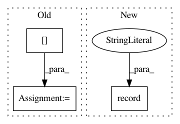

27d10570af678e1059920c4ae895860dda11433c,doc/examples/tracking_quick_start.py,,,#,33
Before Change
tissue_classifier = ThresholdTissueClassifier(FA, 0.1)
stopping_values = np.zeros(csd_peaks.peak_values.shape)
stopping_values[:] = FA[..., None]
seeds = seeds_from_mask(FA > 0.3)
After Change
window.show(ren, size=(900, 900))
else:
print("Saving illustration as det_streamlines.png")
window.record(ren, out_path="det_streamlines.png", size=(900, 900))
.. figure:: det_streamlines.png
:align: center
In pattern: SUPERPATTERN
Frequency: 3
Non-data size: 3
Instances
Project Name: nipy/dipy
Commit Name: 27d10570af678e1059920c4ae895860dda11433c
Time: 2017-06-26
Author: garyfallidis@gmail.com
File Name: doc/examples/tracking_quick_start.py
Class Name:
Method Name:
Project Name: rlworkgroup/garage
Commit Name: e09e6dc678f9b9c198ed361eea0dffa7749bc553
Time: 2020-05-01
Author: 43084978+yonghyuc@users.noreply.github.com
File Name: src/garage/torch/algos/vpg.py
Class Name: VPG
Method Name: train_once
Project Name: nipy/dipy
Commit Name: 61773f29e1e39ed34718e2403d08b3ed31f968c5
Time: 2015-03-13
Author: chantaltax88@gmail.com
File Name: doc/examples/reconst_csd.py
Class Name:
Method Name: